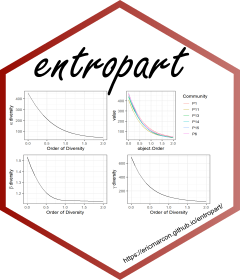
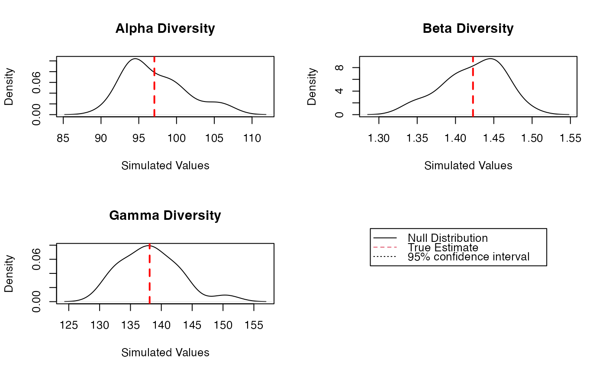

Diversity Estimation of a metacommunity
DivEst.RdEstimates diversity of a metacommunity.
Usage
DivEst(q = 0, MC, Biased = TRUE, Correction = "Best", Tree = NULL,
Normalize = TRUE, Z = NULL, Simulations = 100,
ShowProgressBar = TRUE, CheckArguments = TRUE)
is.DivEst(x)
# S3 method for class 'DivEst'
plot(x, ..., main = NULL, Which = "All",
Quantiles = c(0.025, 0.975), colValue = "red", lwdValue = 2, ltyValue = 2,
colQuantiles = "black", lwdQuantiles = 1, ltyQuantiles = 2)
# S3 method for class 'DivEst'
autoplot(object, ..., main = NULL, Which = "All",
labels = NULL, font.label = list(size=11, face="plain"),
Quantiles = c(0.025, 0.975), colValue = "red",
colQuantiles = "black", ltyQuantiles = 2)
# S3 method for class 'DivEst'
summary(object, ...)Arguments
- q
A number: the order of diversity.
- MC
A
MetaCommunityobject.- Biased
Logical; if
FALSE, a bias correction is appplied.- Correction
A string containing one of the possible corrections. The correction must be accepted by
DivPart."Best"is the default value.- Tree
An object of class
hclust, "phylo" (seeread.tree),phylogorPPtree. The tree must be ultrametric.- Normalize
If
TRUE(default), diversity is not affected by the height of the tree..
IfFALSE, diversity is proportional to the height of the tree.- Z
A relatedness matrix, i.e. a square matrix whose terms are all positive, strictly positive on the diagonal. Generally, the matrix is a similarity matrix, i.e. the diagonal terms equal 1 and other terms are between 0 and 1.
- Simulations
The number of simulations to build confidence intervals.
- ShowProgressBar
If
TRUE(default), a progress bar is shown.- CheckArguments
Logical; if
TRUE, the function arguments are verified. Should be set toFALSEto save time when the arguments have been checked elsewhere.- x
An object to be tested or plotted.
- main
The title of the plot.
- Which
May be
"Alpha","Beta"or"Gamma"to respectively plot the metacommunity's alpha, beta or gamma diversity. If"All"(default), all three plots are shown.- labels
Vector of labels to be added to multiple plots.
"auto"is the same asc("a", "b", "c", "d)".- font.label
A list of arguments to customize labels. See
ggarrange.- object
A
MCdiversityobject to be summarized or plotted.- Quantiles
A vector containing the quantiles of interest.
- colValue
The color of the line representing the real value on the plot.
- lwdValue
The width of the line representing the real value on the plot.
- ltyValue
The line type of the line representing the real value on the plot.
- colQuantiles
The color of the lines representing the quantiles on the plot.
- lwdQuantiles
The width of the lines representing the quantiles on the plot.
- ltyQuantiles
The line type of the lines representing the quantiles on the plot.
- ...
Additional arguments to be passed to the generic methods.
Details
Divest estimates the diversity of the metacommunity and partitions it into alpha and beta components.
If Tree is provided, the phylogenetic diversity is calculated else if Z is not NULL, then similarity-based entropy is calculated.
Bootstrap confidence intervals are calculated by drawing simulated communities from a multinomial distribution following the observed frequencies (Marcon et al, 2012; 2014).
Value
A Divest object which is a DivPart object with an additional item in its list:
- SimulatedDiversity
A matrix containing the simulated values of alpha, beta and gamma diversity.
Divest objects can be summarized and plotted.
References
Marcon, E., Herault, B., Baraloto, C. and Lang, G. (2012). The Decomposition of Shannon's Entropy and a Confidence Interval for Beta Diversity. Oikos 121(4): 516-522.
Marcon, E., Scotti, I., Herault, B., Rossi, V. and Lang, G. (2014). Generalization of the partitioning of Shannon diversity. PLOS One 9(3): e90289.
Marcon, E., Herault, B. (2015). Decomposing Phylodiversity. Methods in Ecology and Evolution 6(3): 333-339.
Examples
# Load Paracou data (number of trees per species in two 1-ha plot of a tropical forest)
data(Paracou618)
# Estimate Shannon diversity.
Estimation <- DivEst(q = 1, Paracou618.MC, Biased = FALSE, Correction = "UnveilJ",
Simulations = 20)
#>
plot(Estimation)
#> Warning: NAs introduced by coercion
#> Warning: NAs introduced by coercion
#> Warning: NAs introduced by coercion
#> Warning: NAs introduced by coercion
#> Warning: NAs introduced by coercion
#> Warning: NAs introduced by coercion

summary(Estimation)
#> Diversity partitioning of order 1 of MetaCommunity Paracou618.MC
#> with correction: UnveilJ
#> Alpha diversity of communities:
#> P006 P018
#> 83.7268 118.2713
#> Total alpha diversity of the communities:
#> [1] 97.06467
#> Beta diversity of the communities:
#> UnveilJ
#> 1.422843
#> Gamma diversity of the metacommunity:
#> UnveilJ
#> 138.1078
#> Quantiles of simulations (alpha, beta and gamma diversity):
#> 0% 1% 2.5% 5% 10% 25% 50% 75%
#> 91.02338 91.53229 92.29567 93.56796 93.72977 94.20054 95.57242 99.48112
#> 90% 95% 97.5% 99% 100%
#> 102.54009 105.50543 105.75335 105.90211 106.00128
#> 0% 1% 2.5% 5% 10% 25% 50% 75%
#> 1.343092 1.344778 1.347307 1.351522 1.374204 1.398754 1.427877 1.452283
#> 90% 95% 97.5% 99% 100%
#> 1.461880 1.464771 1.477548 1.485214 1.490325
#> 0% 1% 2.5% 5% 10% 25% 50% 75%
#> 130.8738 131.1241 131.4994 132.1250 132.6167 135.0768 138.1461 140.9910
#> 90% 95% 97.5% 99% 100%
#> 143.3191 143.7748 147.0958 149.0885 150.4169